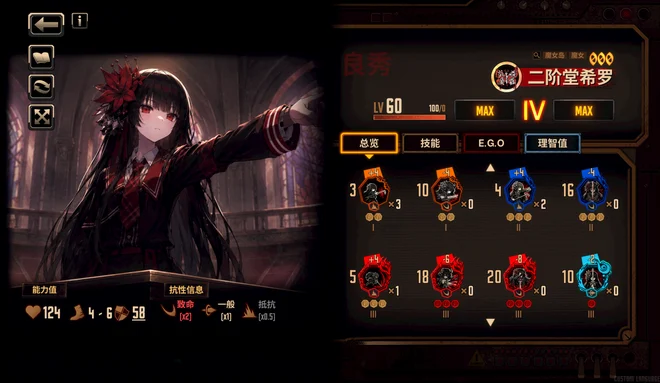

Li Hua | 能工智人（存疑）
本人是北京某大学xk学生，选了ai方向，擅长与AI深入交流而后解决各种问题
Minecraft十年老萌新，月计人（主玩Limbus Company），以及涉猎过若干其他游戏（泰拉，死亡细胞，杀戮尖塔，丝之歌等）
北京大学 · 信息科学技术学院
关于主页
打算放一些课程笔记和整活项目，笔记里会有很多口语化叙述和解释，都是学习过程中经过自己理解的结果（当然也可能是与AI深入探讨的结果）
笔记使用 Obsidian 编写，通过 Quartz 发布，部分内容仍在整理
网站样式由 Codex 辅助完成